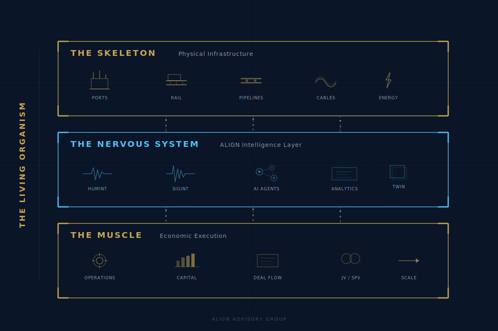

Confidential — Institutional Use Only
ALIGN
Intelligence
Hardwiring the Abraham Accords.
Intelligence-driven origination engine and IMEC Unified Operations Center. Serving Sovereign Wealth Funds, DFIs, and strategic General Partners seeking proprietary, de-risked exposure to the India–Middle East–Europe Economic Corridor.
Diplomacy is software — elegant, essential, yet vulnerable. To make regional stability irreversible, we upgrade to hardware: power grids, desalinated water pipelines, and subsea data cables creating structural interdependence so deep that conflict becomes economically irrational.
Built for Execution
Intelligence-Driven
21st Century
